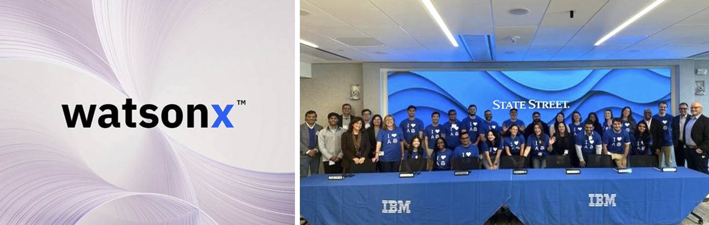
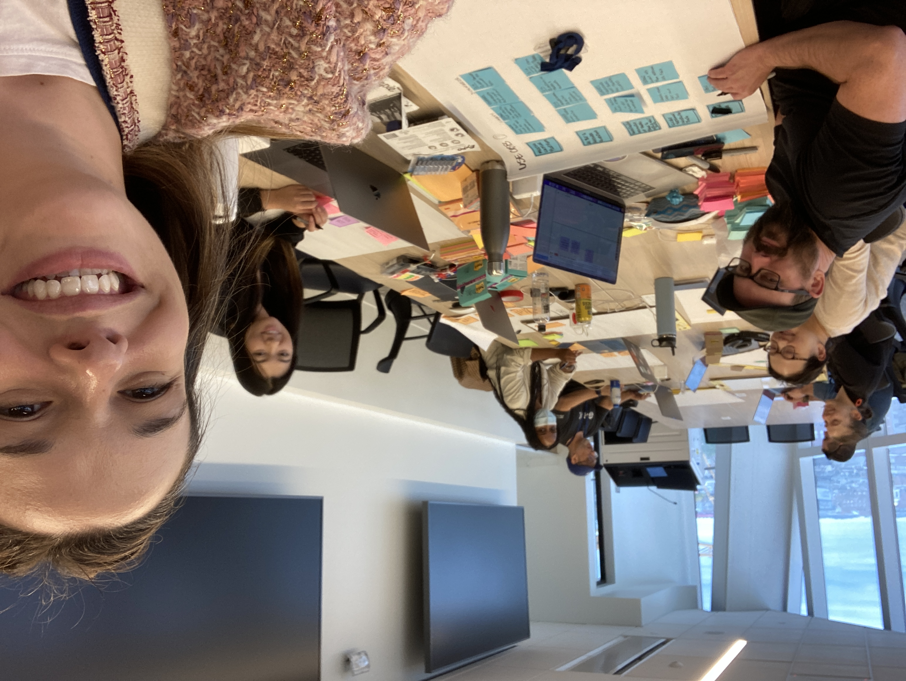
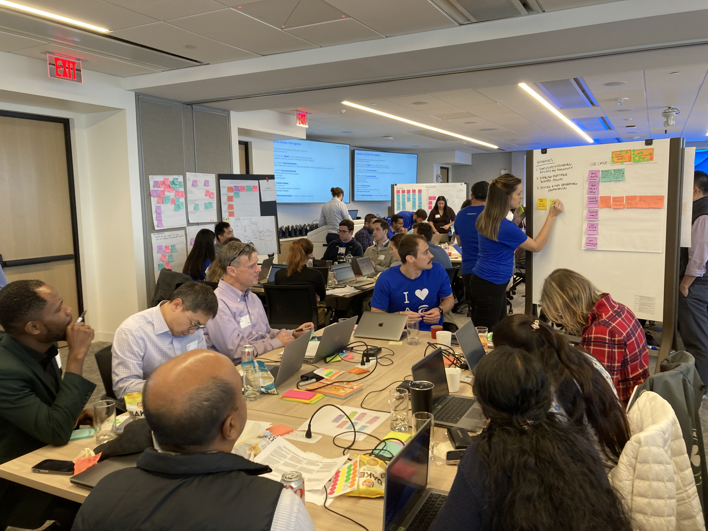
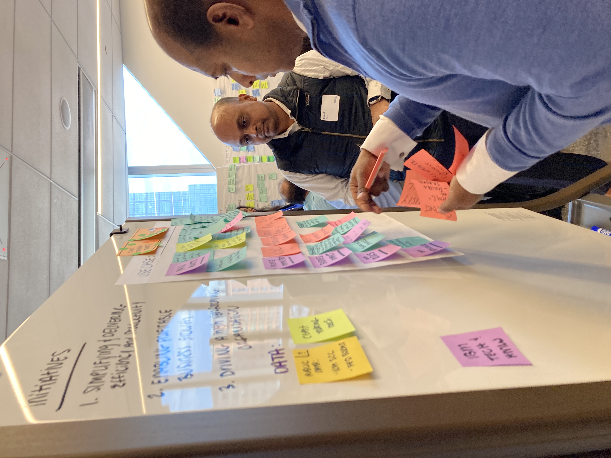
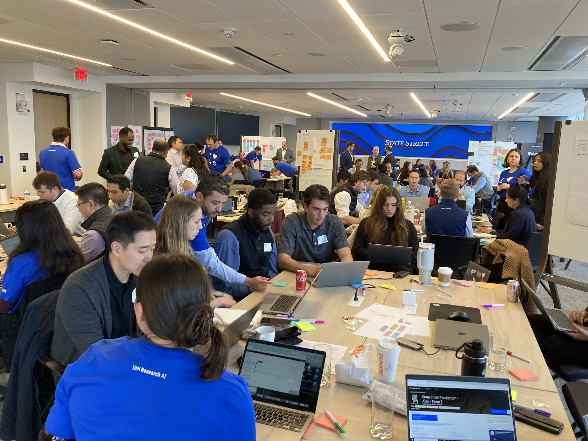
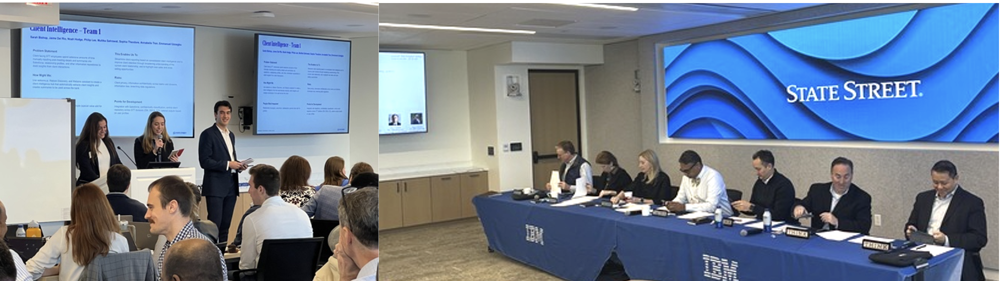
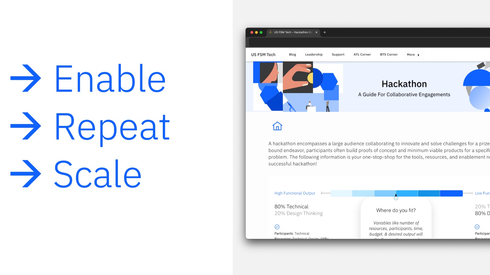
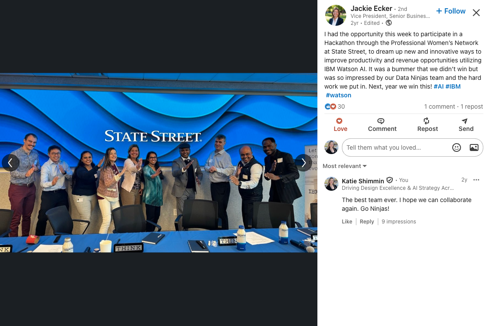

The Challenge Behind the Challenge
Most enterprise clients understand AI conceptually. Far fewer understand how AI can create business value within their specific organizational context, especially in 2023, when AI was catching mass audience attention for the first time.
How do you move executive interest beyond conversations and demonstrations into tangible business opportunities grounded in the client's actual strategic context?
At State Street, IBM had an opportunity to deepen engagement around watsonx, but success required more than showcasing technology. We needed to help client teams experience the technology firsthand, identify meaningful business applications, and build confidence through creation rather than observation.
Key Constraints
- Limited time to create meaningful outcomes
- Diverse participant skill levels across teams
- Need for measurable business impact, not just participation
- Highly competitive account environment
- Requirement to demonstrate real-world AI value, not theoretical possibilities
Without a structured experience, participants could leave inspired but without actionable opportunities for IBM or State Street.
The Architect Behind the Experience
While the event itself was highly visible, my role focused on designing the system that made success repeatable. I coached and enabled 9 strategy design facilitators, ensuring consistency across every team experience.
| Area | My Ownership |
|---|---|
| Strategic Experience Design | Full ownership |
| Facilitation Methodology | Full — design thinking framework and participant journey |
| Facilitator Enablement | Full — coached 9 facilitators for consistency at scale |
| Opportunity Identification Process | Full — structured output requirements for every team |
| Scale & Replication Planning | Shared — playbook for multi-market adoption across all marketing, experience, and sales |
| IBM Account Team Partnership | Shared — with Client Engineering and Technology Sales |


Reframing the Challenge
Most hackathons optimize for prototypes. I reframed the challenge around business transformation.
Instead of "What can we build with AI?" we asked: "Where can State Street create measurable value through AI-enabled experiences, operations, and productivity?"
Strategic Design Principles
Participants would use IBM technology directly, not watch demos.
Every concept had to connect to a State Street strategic initiative.
Success meant participants became internal champions for the platform.
The event was intentionally structured to generate future opportunities.


Required Outputs for Every Team
Use-case exploration, prioritization rationale, business problem framing.
Functional prototype, product demonstration, solution walkthrough.
Final pitch, value proposition, business impact narrative.

Rather than treating the hackathon as a single event, I designed it as a multi-phase engagement model with a clear participant journey.
Beginning → Design Thinking
Middle → Hands-On Solution Building
End → Executive Storytelling & Demos
Educate: Pre-Event Discovery
Before participants entered the room: conducted education sessions, facilitated ideation discussions, explored business opportunities, and aligned solutions to strategic initiatives, creating stronger starting points.
Align: Design Thinking Framework
Each team used structured activities to explore pain points, identify operational inefficiencies, prioritize opportunities, and define measurable value, ensuring ideas were grounded in real business needs.
Build — Hands-On Keyboard Experience
Teams leveraged watsonx.ai, Watson Discovery, and Watson Assistant. Participants moved from observers to creators, dramatically increasing confidence in both the technology and its applicability.
Tell the Story — Executive Playback
Every team prepared a final presentation covering problem, solution, technology, and business impact. Senior leaders from both IBM and State Street evaluated the concepts, elevating the conversation from experimentation to strategic business value.
Scale & Repeat: Formalizing the Playbook
To turn a single winning event into enduring momentum, I codified the entire engagement model into a comprehensive, repeatable playbook. This blueprint captured facilitator guides, agenda templates, output scorecards, and executive playback frameworks, enabling account teams across 7 markets to replicate the innovation model with consistent quality and measurable pipeline results.

From One Event to Organizational Influence
Traditional vs. Experience-Led Approach
| Traditional Approach | Experience-Led Approach |
|---|---|
| Presentations | Co-creation and hands-on experimentation |
| Product demos | Business storytelling with executive visibility |
| Feature discussions | Qualified use cases tied to strategic initiatives |
| One-off engagement | Repeatable model adopted across 7 markets |
The most meaningful outcome wasn't the hackathon. It was proving that thoughtfully designed experiences can simultaneously educate clients, build executive trust, generate business opportunities, and create scalable organizational change. By bringing State Street's technical & business teams hands-on with watsonx, we didn't just run an event. We built genuine mindshare for the platform and helped IBM grow its Data & AI footprint in one of its most competitive accounts.
